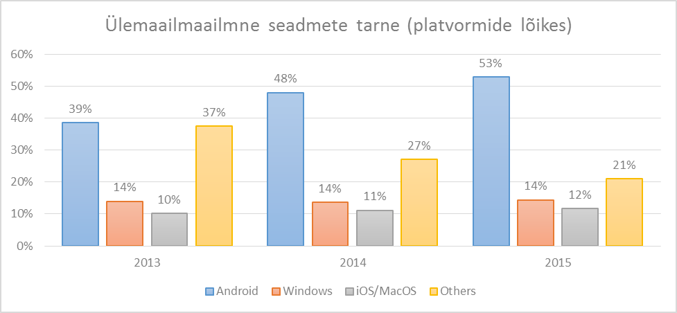
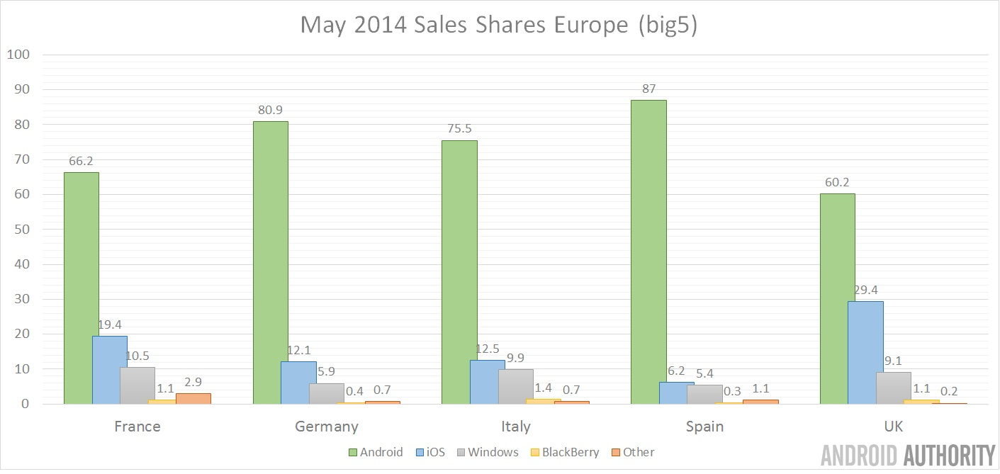
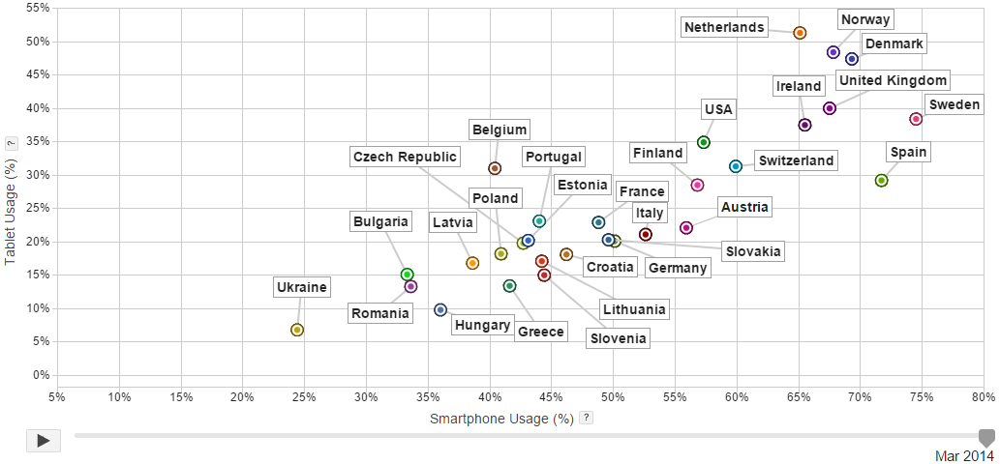

Gartneri 2014. aasta juulis avaldatud tehnoloogia müügianalüüs36 näitab kasvutrendi kõikidel tehnoloogilistel turusegmentidel, kus suurima osakaaluga on mobiil- ja nutitelefonid (ca 75%) ning tahvelarvutite osakaal on 10% lähedal. Sama analüüs annab ka segmentideülese platvormide ülevaate, kuid mis sisaldab ka laua- ja sülearvuteid.

Joonis 9. Ülemaailmne seadmete tarne (platvormide lõikes)
Küll aga võimaldab antud ülevaade (vt joonis 9) teha järgmised järeldused:
Mobiilitehnoloogia platvormist lähtuva ülevaate annab teine, International Data Corporation (IDC) poolt koostatud 2014. aasta kolmanda kvartali ülevaade37, mille kohaselt suurima turuosaga platvorm on Google Android (ca 84%), millele järgneb 11-14% turuosaga Apple iOS. Microsoft Windows Mobile turuosa on hinnanguliselt 3% piires. Eeltoodut kinnitab ka Strategy Analytics poolt 2014. aasta oktoobris väljastatud uuring38.
Periood |
Android |
iOS |
WM |
BlackBerry OS |
Muud |
3kv 2014 |
84.4% ↑ |
11.7% ↓ |
2.9% ↓ |
0.5% ↓ |
0.6% ≈ |
3kv 2013 |
81.2% ↑ |
12.8% ↓ |
3.6% ↑ |
1.7% ↓ |
0.6% ↓ |
3kv 2012 |
74.9% ↑ |
14.4% ↑ |
2.0% ↑ |
4.1% ↓ |
4.5% ↓ |
3kv 2011 |
57.4% ≈ |
13.8% ≈ |
1.2% ≈ |
9.6% ≈ |
18.0% ≈ |
Tabel 14. Platvormide kvartaalne turuosa (2011-2014)
Euroopas on hinnatud39, et üldine interneti kasutajate osakaal on 68% ja mobiiliabonentide osakaal 139% kogu Euroopa rahvastikust. Globaalsest vaatest moodustab Euroopa vastavad näitajad tervikust 18.9% ja 17.2% - võttes aga paralleelselt arvesse, et Euroopa rahvastik moodustab ca 10.4% maailma rahvastikust (peamised mõjutajad on siinkohal Lõuna- ja Ida-Aasia: India ja Hiina). 2015. – 2016. aastat hinnatakse Euroopas murranguliseks, kus nutitelefonide osakaal ületab 50% kogu telefonide turust (tänaseks on kriitiline piir ületatud valdavalt põhjamaades)40. Mobiilitehnoloogia valdkonda Euroopas kujundab Google koos Apple ja Microsoftiga.
2014. aasta alguses Euroopa suurriikide (Saksamaa, Hispaania, Itaalia, Ühendkuningriigid ja Prantsusmaa) statistika näitab, et Android platvormi kasutajaid nendes riikides on kokku ca 68.5%, iOS kasutajaid 19% ja Windows platvorm 10%.

Joonis 10 . EL suurriikide nutiseadmete platvormide jaotus)
Ülejäänud (nt BlackBerry) moodustavad kogu tervikust ca 2.5%41 (vt joonis 10). Euroopa suurriikides 10 müüdavast seadmest 7 on Android, 2 on iOS ja 1 on Windows põhine42.
TNS andmetel koostatud Google Public Data infograafi (ajalise dimensiooniga riikide põhine nutitelefonide ja tahvelarvutide osakaal) alusel paistab selgelt välja, et Rootsi nutiseadmete osakaal on ca 75%, samas kui tahvelarvutite osakaal on ca 39% võrrelduna kõikide võrgutoega seadetega (tavatelefonid, mobiiltelefonid, arvutid, sülearvutid jne). Eestis samasugused näitajad jäävad 43% ja 20% kanti. Valdaval osal Euroopa riikidest on nutitelefonide osakaal ca 45% lähedal ja tahvelarvutite osakaal ca 20% lähedal. Eraldi grupi moodustavad põhjamaad ühe erandiga – Hispaania – kus vastavad näitajad on 1.5-2 korda suuremad43 (vt joonis 11).

Joonis 11 . Euroopa ja USA nutiseadmete osakaal kõikides võrgutoega seadmetest
Kui aga vaadelda sama infograafi ajalise trendina – märts 2011 kuni märts 2014 (nt põhjamaade ja baltikumi osas), siis tuleb selgelt välja nutiseadmete osakaalu pidev kasvutrend. Lisaks paistab jooniselt, et üldine riikide nutiseadmete kasutamise kasvutrend on suhteliselt lineaarne, erandiks on Norra ja Taani, kus kasv on järsem (seda pigem tahvelarvutite suunal).
Eeltoodud graafi andmeid toetab ka AS Eesti Telekom statistika, mille kohaselt on Eestis nutitelefonide osakaal 40% võrrelduna klassikaliste mobiiltelefonidega. Skandinaavias (Norra, Rootsi) on see protsent hinnanguliselt aga juba 70%. Tulenevalt nutitelefonide suurest populaarsusest ja jõulisest arengust oleme ka Eestis seda vahet kinni püüdmas. Statistika kohaselt kasvas Eestis telefonide müük juunis 2014 eelmise aasta sama perioodiga 12% ja tänavu maiga võrreldes 22.3% (seejuures 75% juunis müüdud seadmetest olid nutitelefonid)44.
Hinnanguliselt on Baltikumis nutitelefonide osakaal kõige suurem Leedus (ca 44%) kellele järgneb Eesti ca 43% ja Läti 39%. Tahvelarvutite osakaal on kõige suurem Eestis (ca 20%), kellele järgnevad võrdselt Läti ja Leedu – mõlemad ca 16% osakaaluga (vt joonis 11).
Eesti Telekom AS andmetel on nutitelefonide platvormidest eelistatuim on Android (55%), millele järgneb iOS (17%) ja Windows Mobile (10%). Tahvelarvutite platvormide pingerida on analoogne, kuid tahvelarvutite osakaal EMT võrgust on hetkel 3.3% lähedal. Nendest 58% on Android platvorm ja 42% on Apple iOS.
[36] Gartner: Worldwide traditional PC, tablet, ultramobile and mobile phone shipments to grow 4.2% in 2014 [URL]
[37] IDC: Smartphone OS Market Share, Q3 2014
[38] Android captures 84% share of global smartphone shipments in Q3 2014 (Oct 2014)
[39] European Digital Landscape 2014 [URL]
[40] Worldwide Smartphone Usage Grows 25% 2014. eMarketer [URL]
[41] iOS vs. Android vs. Windows Phone Market Share 2014 (March 2014) [URL]
[42] Android sales may 2014. Android Authority. [URL]
[43] Hispaania erandlikkuse üheks põhjuseks võib-olla asjaolu, et iga-aastane mobiilitehnoloogia aastakonverents (Mobile World Congress) toimub Hispaanias, Barcelonas. Teisalt aga võib-olla aga on just konverentsi asukoha valikul lähtutud lisaks soodsale kliimale ka riigi demograafiast mobiiltehnoloogia valdkonnas.
[44] 75% juunis müüdud mobiiltelefonidest olid nutitelefoni. Postimees [URL]